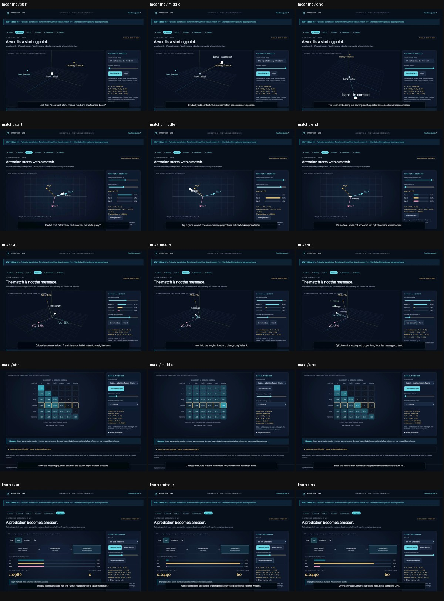
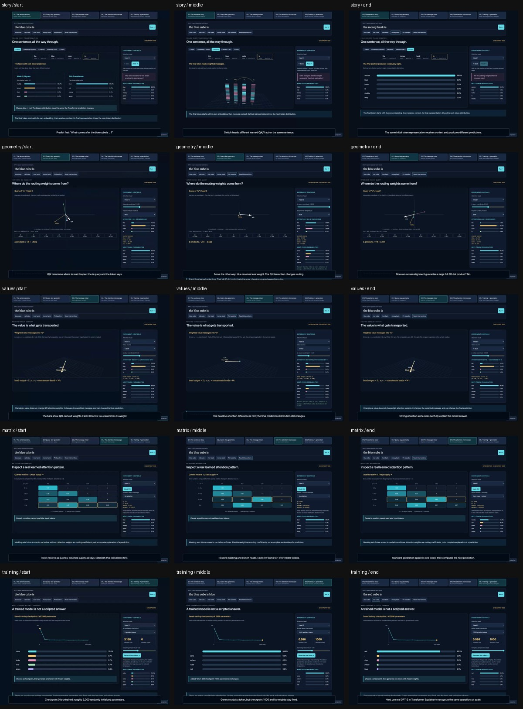
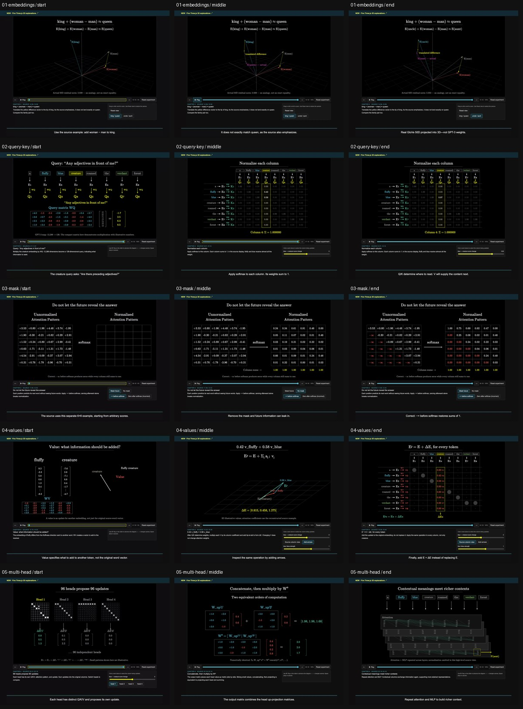
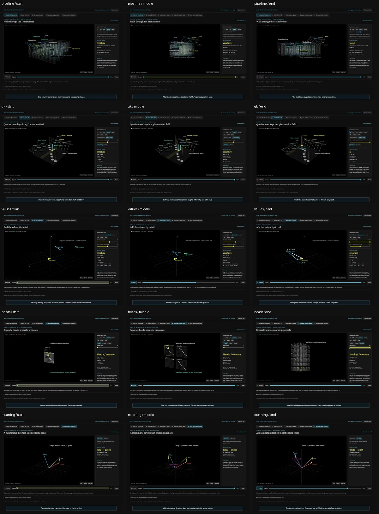

September 9, 2026. English interfaces, teaching guides, cues, comparison captions, provenance, QA pages, screenshots, and freshly recorded walkthroughs. The public URLs are unchanged.
52-scene lab · Five 3D views · Original lab · Trained-model lab (earlier edition, not bundled here) · GPT cinema (earlier edition, not bundled here)
| Coverage | Result | Evidence |
|---|---|---|
| 52-scene browser renders | 52 / 52 | JSON |
| Replica math | 36 / 36 | JSON |
| Replica interactions | 20 / 20 | JSON |
| Five 3D views | 40 / 40 | JSON |
| Original lab | 20 / 20 | JSON |
| Trained-model numerical parity | 24 / 24 | JSON |
| Trained-model browser checks | 17 / 17 | JSON |
| Cinema and mobile fix | 18 / 18 | JSON |
| English layouts and all scene cues | 79 / 79 | JSON |
| Public pages and live diagnostic | 14 pages + 12 / 12 diagnostic | JSON |
| Fresh English recordings | 20 full decodes | JSON |
| Public video playback | 20 videos; 60 seeks; 20 byte-range/hash checks | JSON |
| Protected original assets | 77 / 77 unchanged | JSON |
| Japanese authored-text scan | 0 remaining matches | JSON |
All 20 silent walkthroughs were captured again in Chrome with English UI and burned-in English captions. The 3D recordings use longer caption holds for reading. Ordered caption transcripts are available next to each MP4 as .captions.txt files.
Original: five recordings (earlier edition, not bundled here) · Version 2: five recordings (earlier edition, not bundled here) · Replica: five recordings · 3D: five recordings
Opening, middle, and ending frames of the exact delivery videos. Comparisons retain unmodified external source frames.




52 source comparisons · Five 3D comparisons
Source: github.com/ryosuzuki/lecture-demo/tree/main/18-attention-3d
Source: github.com/ryosuzuki/lecture-demo/tree/main/18-attention-3d
Source: github.com/ryosuzuki/lecture-demo/tree/main/18-attention-3d
This remains a source-aligned partial teaching prototype, not a complete frame-by-frame 3Blue1Brown reproduction or real GPT-3 internal-state replica. Original external imagery and licensing attribution are unchanged. The prior limitation on automated YouTube-embed playback verification remains; direct source links are provided. All locally authored MP4 playback is verified.